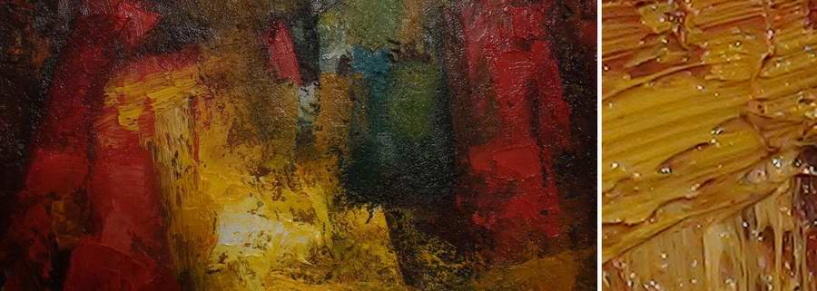
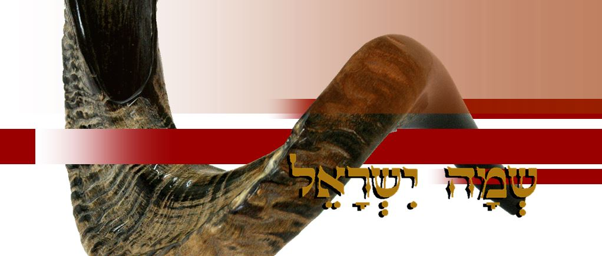
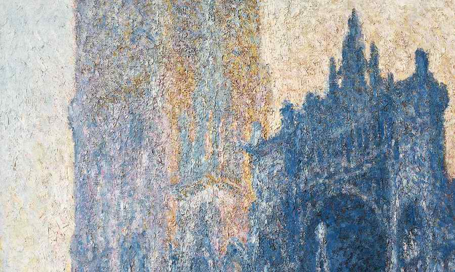
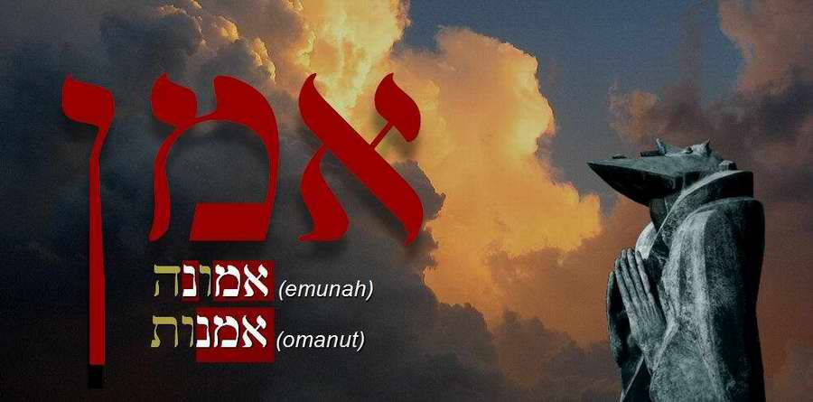

The Language of the Bible
5 articles

Understanding the Language of the Bible: Look to the Root2015 · Art Midrash, The Language of the Bible
Shofar or Trumpet? Let's Check2015 · The Language of the Bible, Biblical Feasts- The Jewish Character of Worship2015 · The Language of the Bible, Israel and the Church

Different Understandings2014 · Art Midrash, The Language of the Bible
His Hands Were Faith (Exod. 17:12)2014 · Art Midrash, The Bible and the Artist, The Language of the Bible